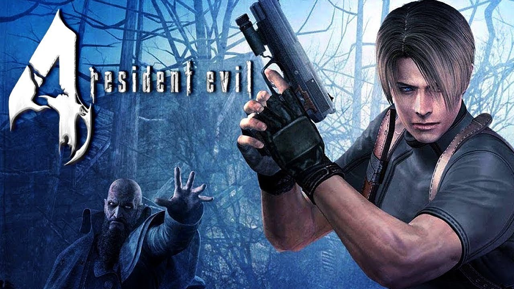

Resident Evil 4
imagem do jogo Resident Evil 4
Resident Evil 4, conhecido no Japão como Biohazard 4 (バイオハザード4 Baiohazādo Fō?), é um jogo eletrônico de survival horror e tiro em terceira pessoa desenvolvido e publicado pela Capcom, lançado originalmente para o Nintendo GameCube em 2005. É o sexto jogo principal da franquia Resident Evil.
A história de Resident Evil 4 segue o agente especial do governo dos Estados Unidos Leon S. Kennedy, que é enviado em uma missão para resgatar Ashley Graham, filha do presidente americano, que foi raptada por uma seita macabra. Ele viaja para uma área rural da Espanha, onde luta contra hordas de moradores violentos e monstros mutantes, e se reúne com a misteriosa espiã Ada Wong.
Planejado desde dezembro de 1999, Resident Evil 4 foi submetido a um longo processo de desenvolvimento, durante o qual quatro versões propostas para o jogo foram descartadas. Inicialmente desenvolvido para o Nintendo GameCube, a primeira produção foi dirigida por Hideki Kamiya depois que o produtor Shinji Mikami pediu-lhe para criar um novo título para a série Resident Evil. No entanto, foi decidido iniciar o desenvolvimento novamente. O jogo foi destinado a ser um exclusivo do GameCube como parte do Capcom Five, mas uma versão para PlayStation 2 foi anunciada antes do jogo ser lançado no GameCube. Posteriormente Resident Evil 4 também foi lançado para Microsoft Windows, Wii, PlayStation 3, Xbox 360 e em versões reduzidas para iOS, Zeebo e Android.
Resident Evil 4 recebeu aclamação da crítica. Ele ganhou muitos prêmios de Jogo do Ano em 2005 e foi visto como um sucesso multiplataforma que influenciou a evolução dos gêneros survival horror e de tiro em terceira pessoa. O jogo também foi pioneiro e popularizou a perspectiva de visão "sobre o ombro" em terceira pessoa. Desde então, tem sido amplamente considerado um dos melhores jogos de todos os tempos.
Resident Evil 4 recebeu aclamação da crítica. Ele ganhou muitos prêmios de Jogo do Ano em 2005 e foi visto como um sucesso multiplataforma que influenciou a evolução dos gêneros survival horror e de tiro em terceira pessoa. O jogo também foi pioneiro e popularizou a perspectiva de visão "sobre o ombro" em terceira pessoa. Desde então, tem sido amplamente considerado um dos melhores jogos de todos os tempos.
O jogador controla o protagonista Leon S. Kennedy a partir de uma perspectiva em terceira pessoa. A jogabilidade centra-se na ação e tiroteios envolvendo multidões de inimigos em grandes áreas abertas. A câmera é colocada atrás de Leon, e amplia para uma visão sobre o ombro quando se aponta uma arma.[4] Ao contrário dos jogos anteriores da série, há a adição de uma mira laser que adiciona uma nova profundidade ao apontar, permitindo que o jogador mire em várias direções e facilmente mude sua colocação em qualquer momento. Balas afetam os inimigos especificamente onde são atingidos: tiros nos pés podem fazer os inimigos tropeçar, enquanto tiros nos braços podem fazer eles largarem suas armas.[5]
Outro novo aspecto de Resident Evil 4 é a inclusão de controles sensíveis ao contexto. Com base na situação, o jogador pode interagir com os aspectos de seu ambiente: derrubar uma escada, saltar de uma janela ou esquivar-se de um ataque inimigo. Há também eventos em tempo real, no qual o jogador deve pressionar os botões indicados na tela para executar ações como correr de uma pedra caindo ou lutar um inimigo para se manter vivo. Este recurso é incorporado muitas vezes em muitas batalhas contra os chefes do jogo, onde o jogador deve evitar ataques que causam morte instantânea.[6]